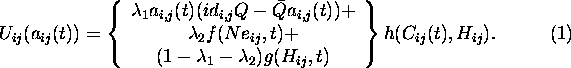
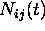
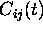
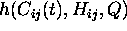
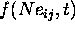
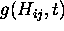
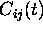
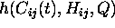
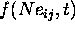
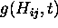

The preferences for each individual are represented by an utility function that is given by the following formula:

Here  and  represent the expected action taken by the
representative individual in the neighborhood of individual ij and in the
hall, respectively;  represents a stock of clapping, which is a
measure of how much has the individual clapped or standed up to time t;  represents the effect of on the utility
function; the function  reflects the synergy between the
network of friends and the individual ij, while  represents
the influence of the overall reaction on the individual's utility. The
particular forms of these functions will be specified further.
represent the expected action taken by the
representative individual in the neighborhood of individual ij and in the
hall, respectively;  represents a stock of clapping, which is a
measure of how much has the individual clapped or standed up to time t;  represents the effect of on the utility
function; the function  reflects the synergy between the
network of friends and the individual ij, while  represents
the influence of the overall reaction on the individual's utility. The
particular forms of these functions will be specified further.